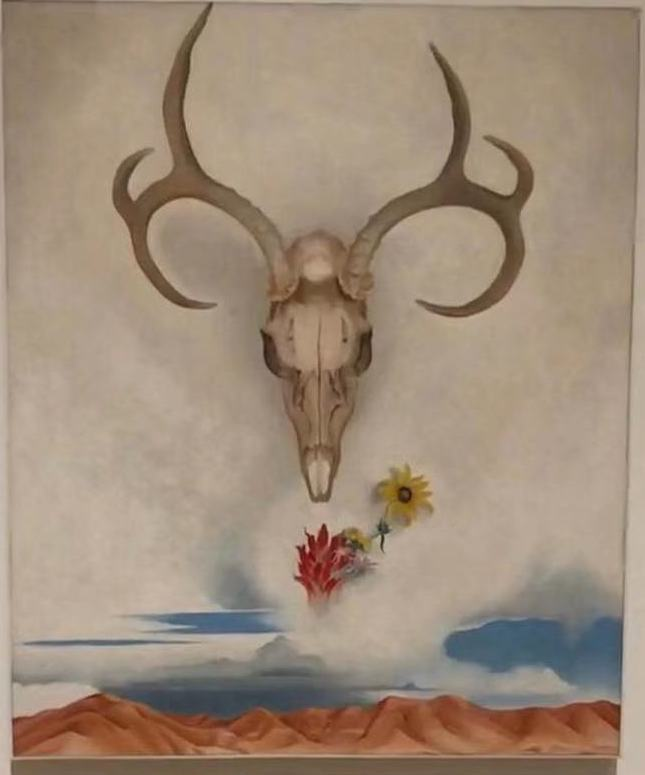

The meaning of images that everyone understands is different, the meaning of image is easy to be tampered with, image is easy to be copied.Images are still. It's like a corridor, connecting the monent when the image expresses itself with the moment when the viwer is watching. As a result, half of the interpretation of the image depends on the moment the audience looks at it.
This is a pciture I took from Whitney Museum. My friend and I have different understanding of it. He feels the skull symbolize god or demon, something above everthing. My understanding is that death and life is a cycle which are closely related. Death can breed alive creatures, and those creatures will die one day and become others nutrient.
